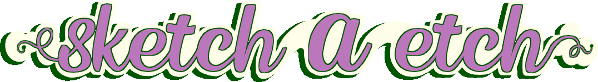
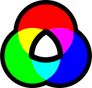

Sketch A Etch
by talesofterror
Created as part of The Odin Project online web development course.
Textures and SVGs by me. Title created with Kingsman font from fontspace.com
// final push: ~Jan2024AD
Right-click to erase!

Set grid resolution!
100
Toggle grid on/off!